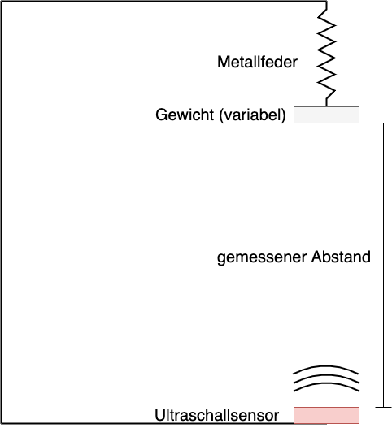

Bausteine Computergestützter Datenanalyse von Lukas Arnold, Simone Arnold, Florian Bagemihl, Matthias Baitsch, Marc Fehr, Maik Poetzsch und Sebastian Seipel. Anwendungsbaustein Datenanalyse mit ChatGPT von Simone Arnold ist lizensiert unter CC BY 4.0. Das Werk ist abrufbar auf GitHub. Ausgenommen von der Lizenz sind alle Logos und anders gekennzeichneten Inhalte. 2024
@misc{BCD-Styleguide-2024,
title={Bausteine Computergestützter Datenanalyse. Anwendungsbaustein Datenanalyse mit ChatGPT},
author={Arnold, Lukas and Arnold, Simone and Baitsch, Matthias and Fehr, Marc and Poetzsch, Maik and Seipel, Sebastian},
year={2024},
url={https://github.com/bausteine-der-datenanalyse/a-Datenanalyse-mit-ChatGPT}}
1 Voraussetzungen
Die Bearbeitungszeit dieses Bausteins beträgt circa Platzhalter. Für die Bearbeitung dieses Bausteins werden folgende Bausteine vorausgesetzt und die genannten Bibliotheken verwendet:
Im Baustein werden einfache Daten aus einem Experiment zur Bestimmung der Federkonstante einer Feder verwendet. Die Daten sind im Baustein hinterlegt.
2 Lernziele
In diesem Baustein wird analysiert, in wie weit es möglich ist, ChatGPT für die Datenanalyse zu verwenden. Videos wie dieses: Datenanalyse mit ChatGPT versprechen eine einfache und schnelle Datenanlyse ohne Mathe und Programmieren. Aber ist dies wirklich so?
3 Einfache Datenanalyse mit bewährten Methoden
Zunächst wird auf herkömmlichen Wegen eine einfache Datenanalyse durchgeführt. Dann wird versucht, diese mit ChatGPT zu reproduzieren.
3.1 Datenanalyse: Bestimmung der Federkonstanten einer Feder
Für eine einfache Datenanalyse schauen wir uns folgendes Problem an: Mit Hilfe eines Ultraschall-Abstandssensors wurde der Abstand zwischen der Unterseite eines Gewichts, welches an einer Feder hängt, und dem Sensor, welcher auf dem Boden befestigt ist, gemessen. Die Feder ist dabei an einem an der Decke befestigten Haken aufgehangen. Der Versuchsaufbau ist in folgender Abbildung dargestellt.

Versuchsaufbau der Abstandsmessung
Die Messdaten sind in der Datei data.csv zu finden. Die erste Spalte beschreibt hierbei die Nummer der Messung, die zweite Spalte beschreibt das an die Feder angehängte Gewicht in Gramm und die dritte Spalte beschreibt den gemessenen Abstand in cm.
Zunächst importieren wir die Daten in das Objekt data und stellen die Daten mit matplotlib in der bekannten Weise dar.
import numpy as npimport matplotlib.pyplot as pltdata = np.loadtxt("skript/01-daten/data.csv", delimiter =';')fig,ax = plt.subplots(1,1,figsize = (9,6))ax.plot(data[:,1], data[:,2], 'x', label ='Messpunkte')ax.set_title('Messdaten', fontsize =20)ax.set_xlabel('Gewicht in g', fontsize =20)ax.set_ylabel('Abstand zum Sensor in cm', fontsize =20)xlabels = ax.get_xticklabels()ax.set_xticklabels(xlabels,fontsize=16)ylabels = ax.get_yticklabels()ax.set_yticklabels(ylabels,fontsize=16)ax.grid()ax.legend(fontsize =20)
Gewicht gegen Sensorabstand
Wie leicht zu erkennen ist, scheint der Datenpunkt bei einem Abstand von 200 cm ein Messfehler zu sein, diesen eleminieren wir also aus den Daten.
data_new = np.delete(data,113,0).copy()
Da nun der Ausreißer eliminiert wurde, sollten Mittelwert und Median recht nah nebeneinander liegen. Dies ist im folgenden Plot dargestellt:
import pandas as pdmittelwerte = pd.DataFrame(data_new).groupby(1)[2].mean().to_frame().reset_index(drop=False)print(mittelwerte)median = pd.DataFrame(data_new).groupby(1)[2].median().to_frame().reset_index(drop=False)print(median)fig,ax = plt.subplots(1,1,figsize = (9,6))ax.plot(mittelwerte[1],mittelwerte[2], 'o', color ='blue', label ="Mittelwerte")ax.plot(median[1],median[2], 'o', color ='red', label ="Mediane")ax.set_xlabel('weight in g', fontsize =20)ax.set_ylabel('distance to sensor in cm')ax.set_title('Mittelwerte und Median der Messdaten', fontsize =20)ax.set_xlabel('Gewicht in g', fontsize =20)ax.set_ylabel('Abstand zum Sensor in cm', fontsize =20)xlabels = ax.get_xticklabels()ax.set_xticklabels(xlabels,fontsize=16)ylabels = ax.get_yticklabels()ax.set_yticklabels(ylabels,fontsize=16)ax.grid()ax.legend(fontsize =20)
Im Folgenden verwenden wir den Mittelwert der Messungen pro Gewicht.
Da in das Hook’sche Gesetz die Ausdehnung der Feder eingeht
\(F = m \cdot g = k \cdot \Delta x\)
müssen wir den gemessenen Abstand noch in die Ausdehnung der Feder umrechnen. Dazu verwenden wir den Mittelwert des Abstandes bei \(0 \,g\) als Referenz
Um die Federkonstante zu bestimmen, benötigen wir die Steigung der Geraden. Diese können wir über eine einfache lineare Regression bestimmen. Da wir die Federkonstante \(k\) in \(\frac{N}{m}\) bestimmen wollen, bietet sich eine umgekehrte Darstellung der Form
Verlass auf vorhandene Daten: Sprachmodelle lernen aus einer riesigen Menge an Texten aus dem Internet. Das bedeutet, sie schnappen alles auf – das Gute, das Schlechte und das Verrückte. Wenn die Infos, die sie gelernt haben, fehlerhaft oder verzerrt sind, kann das auch ihre Antworten beeinflussen.
Kein Verständnis der Realität: KI-Modelle verstehen nicht wirklich, was sie sagen. Sie erkennen Muster in den Daten, die sie trainiert haben, und ahmen diese nach. Sie wissen nicht, ob etwas wahr ist, sie wissen nur, was oft zusammen gesagt wird.
Aktualität: Sprachmodelle sind nur so aktuell wie die Daten, mit denen sie zuletzt trainiert wurden. Wenn wichtige Ereignisse nach diesem Zeitpunkt passieren, ist die KI buchstäblich nicht auf dem neuesten Stand.
Und:
ChatGPT ist ein Sprachbot. Es kann nicht rechnen
Die eigenen Daten werden zum Training des Bots weiterverwendet (wenn nicht deaktiviert).
Hat ChatGPT Dinge entdeckt, die Sie selber nicht gefunden haben? Falls ja, welche?
4 Das Wichtigste
5 Kompetenzquiz
6 Übungen
6.1 Übung 1
Generieren Sie sich mit ChatGPT einen Datensatz (Beispielsweise die Messung der CO2 Konzentration in einer Schulklasse an einem Schultag).
Werten Sie diesen Datensatz einmal mit den im Kurz erlernten Methoden der Datenanalyse und einmal mit ChatGPT aus. Vergleichen Sie die Ergebnisse und stellen Sie die Unterschiede dar.